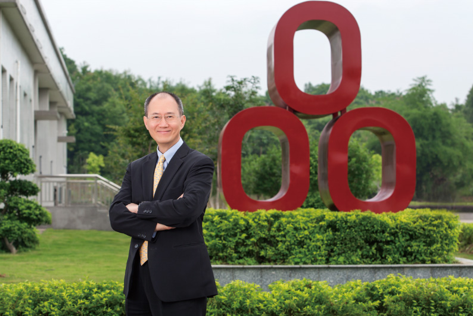

董事長的話

台泥自1946年成立至今，已經屹立超過一甲子。從成立的那一刻起，台泥便將企業社會責任烙印在企業基因之中。為了協助國家發展經濟，台泥是第一個響應政府「資本證券化」政策，成為台灣證券市場第一家股票公開發行的上市公司，也成為我國證券市場成功發展至今的最佳見證。自從公司創立以來，台泥毋忘對投資大眾責任的初衷，今時今日不但是我國惟一一家自證券市場成立以來仍然活躍的企業，更是我國惟一一家創立至今每一年均能以資本利得回饋投資人的負責任企業。近二十年來，更跟隨著政府全球化政策與經濟趨勢，擺脫台灣傳統產業包袱，克服政府更迭與外在環境轉變，秉持『誠信、互惠』的儒商精神，以「擁抱改變，熱情學習」的信念，成功轉型成為跨足水泥、石化、能源、航運、綠能、廢棄物再處理利用等產業的全球性企業。
不僅在公司經營上注重股東權益，台泥更深深體認到企業永續經營與社會環境發展習習相關，企業存續與經營更要能適切地回應社會大眾，尤其如何完善環境的循環機制與再生，更是台泥應盡的責任。因此，台泥在我上任後就追求實踐「環保不是成本，是責任」的核心價值，務求以集團整體資源為地球村盡一份力量。因此，這20年來，不斷調整企業營運的作業流程，從生產流程導入綠色製程開始思考，至最後集團資源整合，都以環境保護為中心思想，兌現環保的責任使命。
1.「環保是責任，不是成本！」：環保＋資源整合
為了落實「環保是責任，不是成本」的核心價值，這些年台泥在生產過程中投入更多綠色製程，希望能及時降低對環境的影響，同時也期許未來能持續努力，做得更好。
| (1) | 港、廠、電三合一 台泥在和平廠首創「水泥廠、火力發電廠、港口」三合一的「循環經濟」運作模式，將水泥廠及火力發電廠在生產過程中無法避免的多餘廢料，透過再利用的互補，以及就源運輸的方式，同時兼顧減少廢料及節約能源的效果，促進資源有效整合。 |
| (2) | 致力減碳節能、創造商機 台泥利用與工研院合作CCS二氧化碳捕捉技術的研發，可以有效處理捕捉二氧化碳的難題，減少二氧化碳排放，達到緩解〝全球暖化溫室效應問題〞，此技術更受到素有「產業創新奧斯卡獎（The Oscars of Invention- The Chicago Tribune）」美名的全球百大科技研發獎（R&D 100 Awards）的國際大獎肯定。同時台泥更進一步計畫利用捕捉的二氧化碳培植藻類，再透過培植的藻類提煉有益人類健康的食品與用品，以期在生技產業上有所成效，開創減碳再利用的循環新商機。 |
| (3) | 降低空汙防治成本 台泥除了利用生產端及新技術貢獻循環經濟，更在水泥原料取得端，以高成本及新觀念投入豎井運輸採礦法，改善採礦流程。透過最先進的山頂平臺式階段開採豎井運輸法，以完全地下化、自動化、環保化的設計，大幅降低對環境衝擊，這樣的新觀念與技術先後獲中國礦冶工程師協會頒發技術獎章、勞委會頒發安全衛生優良單位優良獎，有效兼具景觀維護、水土保持、提升空氣品質的效益。 |
2. 永續經營的企業責任
台泥深切體認以永續經營為理念的企業，更應透過對文化的形塑與保存做出貢獻，同時致力於教育向下紮根的工作，在行有餘力之時，更要能協助全球因應環境暖化所帶來的衝擊。因此，台泥不僅針對企業所處的周遭社區里鄰，創造穩定就業機會與安全職場環境，積極投入社區文化推廣與舉辦藝文活動，提升在地文化素養，優化社區氛圍與完善硬體建置，更透過文化、教育及物種保存等多面向的努力，以期裨益人類的永續。台泥與辜公亮文教基金會推動「台北戲棚」的展演，延續戲曲文化；2007年元月，由台泥企業團捐資成立「財團法人辜嚴倬雲植物保種暨環境保護發展基金會」，致力於全世界熱帶及亞熱帶植物蒐藏保存，以永續地球上最豐富的生物多樣性，至今成立九年間，已成立了16個溫室，至2015年底已保存27,589個物種，是目前全世界最大的物種保存中心；現今更致力於推廣「台泥品學堂」活動，對於下一代的教育進行紮根。
3. 持續精進創新與精緻管理
這些年台泥除透過「鷹式管理」力求快、狠、準的經營績效，在管理策略上更加入力求創新與精緻管理的元素，在傳統產業的營運管理中，持續致力引入最新的互聯技術，利用電腦化、數位化、智慧化的各項手持裝置、物聯網、大數據等科技工具，即時控管各項營運風險，達到零時差的行動管理，力求率先進入工業4.0的管理世界。
4. 展望與策略
近年來台灣地區的水泥市場已是成熟且需求不易成長，台泥一方面拓展海外市場，加速投資大陸水泥市場，選定華南地區為目標，延伸至華東、西南等地區，開拓新市場；另一方面，在所處產業積極導入各項台灣的研發技術，搶佔技術制高點，維持產業競爭力。未來台泥除了致力於水泥本業的持續擴展外，更將致力強化資訊系統的運力，以持續精進管理能力，更希望能透過產學合作進行新技術研發，成功創造商轉機會，以落實環保技術投入永續商轉，對此，台泥已有以下清晰的構想：
| (1) | 儲備技術能量，實踐技術創新 如前所述，台泥透過與工研院的合作已掌握碳捕獲的研發技術，如今更立基於與工研院鈣迴路捕獲二氣化碳技術發展的計畫，率先於2013年6月建立「1.9MWt鈣迴路捕獲二氧化碳先導試驗廠」，是全球同類型技術最大規模的試驗廠，未來將進一步投注於提升碳捕獲率，期能為全球溫室暖化做出顯著的貢獻。 |
| (2) | 創新環保技術的再生循環經濟應用 台泥透過碳捕獲研發技術，已證實可有效捕獲二氣化碳，達到減碳效益，未來更希望進一步開發成熟的環保技術，以便發展全套的環保再生循環經濟機制，促成技術有效商轉，例如透過利用捕獲的二氣化碳滋養各種微藻，再從微藻中萃取出生質燃料的原物料，甚至是高經濟價值的蝦紅素等物質，將環保技術轉化為商機使之永續不輟。 |
| (3) | 商轉技術之再回饋 捕獲二氣化碳滋養各種微藻的商轉技術，獲取的各項物質如蝦紅素已是現今化妝品和保健食品中相當昂貴的原料，未來若能利用新技術持續加以量產，除能有助於資源永續及環境保護，更能為企業創造額外價值，再投注於有助永續經濟的新技術研發。 |
| (4) | 水泥技術再運用，實踐“減量化、無害化、資源化”的新生活 經過近一年半的建設，台泥（安順）水泥有限公司（以下簡稱“台泥安順”）水泥窯協同處置生活垃圾專案於2015年12月間正式完工投產。這是台泥企業團在大陸建設的首個垃圾協同處置專案，也是建構環保產業價值鏈的示範工程。該專案採用日本川崎研發的氣化爐結合水泥窯預煅爐技術，和台泥安順5000 t/d新型懸浮式預熱機熟料生產線預分解生產中的高溫煆燒工法，可實現無害化資源再利用處理都市生活垃圾，預計年處理量約7.3萬噸。對比傳統的焚燒法，水泥窯協同處置利用水泥旋窯高溫、高滯留時間、高擾動對垃圾氣化後的可燃氣及垃圾處理過程產生的滲漏液進行焚燒，吸收和處理垃圾產生的戴奧辛、重金屬等有害物質，將生活垃圾中不可燃物作為水泥生產替代原料，提高生活垃圾處理的“減量化、無害化、資源化”，因而更環保、更安全、更經濟，不會給環境帶來二次污染。 |